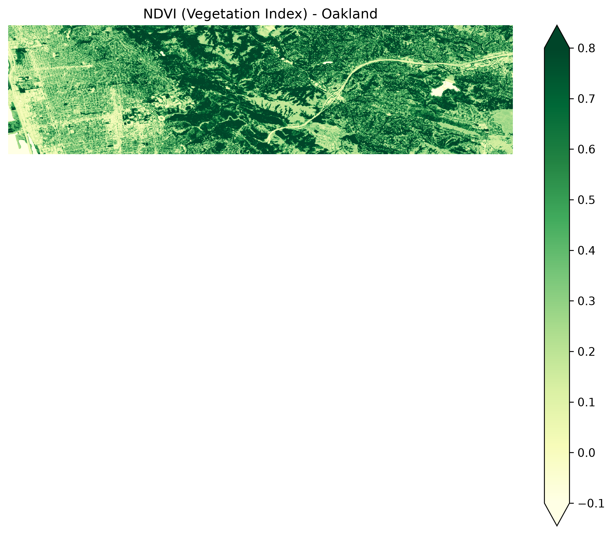

Scientific Context & Background
In August 2020, Christopher Schell and colleagues published a landmark review in Science establishing that systemic racism and classism are primary drivers of ecological and evolutionary dynamics in urban ecosystems[cite: 1]. Historical housing policies—specifically Home Owners' Loan Corporation (HOLC) redlining maps from the 1930s—systematically divested from communities of color, creating enduring environmental inequities across American cities[cite: 1].
"Racism acts as structural violence against our natural world." — Christopher Schell[cite: 1]
This project investigates how historical HOLC redlining grades ('A' Best, 'B' Still Desirable, 'C' Definitely Declining, 'D' Hazardous) directly drive modern urban vegetation density and landscape heterogeneity in Oakland, California[cite: 1].
Spatial Data Methodology
The analysis follows a reproducible spatial data processing workflow in Python:
- Vector Data Management: Historical HOLC redlining polygons for Oakland were loaded and filtered using
Ibis and GeoPandas, then visualized interactively with Leafmap[cite: 17].
- Raster STAC Processing: Multispectral Sentinel-2 satellite imagery was queried via the Earth Search STAC catalog[cite: 17]. The Near-Infrared (NIR) and Red bands were processed streaming-style to compute the Normalized Difference Vegetation Index (NDVI)[cite: 17]:
NDVI = (NIR - Red) / (NIR + Red)
- Zonal Statistics: Mean NDVI values were calculated per polygon geometry using spatial clipping to quantify vegetation density across redlining grades[cite: 17].
Visualizations & Results
1. Modern Canopy Coverage (NDVI)

Figure 1: Sentinel-2 derived NDVI map over Oakland. Darker green indicates dense vegetation canopy, while lighter shades highlight urban built environment.
2. Mean Vegetation by HOLC Grade

Figure 2: Zonal mean NDVI scores across historical HOLC redlining grades in Oakland, demonstrating lower average vegetation in historically redlined ('D') areas.
Discussion & Key Takeaways
Our quantitative findings support the conclusions of Schell et al[cite: 1]. The spatial distribution of vegetation in Oakland is not random; rather, historical HOLC grades assigned nearly a century ago continue to track modern urban canopy density[cite: 1]. Neighborhoods designated 'A' retain substantially higher tree canopy coverage (higher mean NDVI), while historically redlined 'D' neighborhoods exhibit lower vegetation density, contributing to elevated surface temperatures, reduced shade, and localized urban environmental injustice[cite: 1].